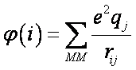
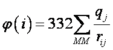

QMMM incorporates environmental effects in terms of the QM/MM approach. This keyword, its description, and implementation into MOPAC was based on materials developed and provided by Prof Arieh Warshel and Dr Nikolay Plotnikov, University of Southern California.
This option is intended for use with other software, and requires a knowledge of how to construct a mol.in file. Users should become familiar with MM software before attempting to use QMMM.
To use QMMM, a file called mol.in must be present in the folder that contains the data set. The format of of mol.in is described below.
A hybrid quantum mechanics/ molecular mechanics approach QM/MM1 has become a powerful modeling technique2-4. This method allows one to capture the electrostatic effects of surrounding "solvent" in complex polar and microscopically inhomogeneous environment (e.g. water, protein, zeolites, etc.) on "solute" (e.g. reactants, enzyme active center, chromophore, etc.) "Solute" is treated at the QM level of theory, while "solvent" is described with a MM model. The QM/MM approach is particularly effective when less expensive implicit solvation models are inapplicable5.
In the QM/MM approach, it is crucial to describe coupling between the QM and the MM regions, in particular polarization of solute by polar environment. Not doing so will for example lead to having NaCl dissociating to Na and Cl instead of Na+ Cl- in water6.
In the case of semi-empirical Hamiltonians it is quite simple to incorporate the effect of solvent into semi-empirical QM/MM Hamiltonian by adding the interaction energy of an electron with the electrostatic potential created by solvent (MM atoms) to the one-electron diagonal elements of Hamiltonian1,7,8:
here hνν is the gas phase one-electron Hamiltonian elements with the ν-th orbital centered on atom i , qj is the charge of the MM atom j, rij is the distance between atoms i and j, and the sum is over all MM atoms j.
This simple modification is implemented5 in MOPAC.The required electrostatic potentials on QM atoms from all MM atoms are calculated with the MOLARIS-XG simulation package, which also calculates the corresponding QM/MM electrostatic energy derivatives using the charges provided by MOPAC. This allows to perform almost any QM/MM calculation (e.g. activation free energy barrier, average dipole moments, absorption and emission spectra). Furthermore, this functionality allows for a general interface between MOPAC and any MM program (e.g. GROMACS)
Note that MM program must provide an additional input file mol.in in the following format:
<empty line>
n1 n2
0 0 0 0 φ(1)
0 0 0 0 φ(n)
where n1 is the number of atoms, n2 is the number of linked atoms, n = n1 + n2 is the number of QM atoms including link atoms, and

φ(i) units are kcal/mol. If the atomic distance, rij, is given in Ångstroms, and qj is expressed in fraction of the elementary charge (e.g. -1 for an electron) then φ(i) is approximately given by:

This file should be in the directory where MOPAC is
being executed.
The output created by MOPAC includes the effect of environment on energy, heat of formation, charge distribution, dipole moments. Energy derivatives include only QM intra-molecular contributions. However, the QM charge distribution can be used to calculate electrostatic QM/MM contribution to force according to the MM force-field formalism. Note that MOPAC does not make any internal distinction between link and non-link QM atoms, and the only information that MOPAC uses from the mol.in file is n and the φ(i) values. Also, n must match the total number of atoms in the main MOPAC input file that requests the QMMM calculation.
The file mol.in provides the various φ(i). These are given in lines 3 on, in column 5, as shown in the following example. The first line is is skipped, the second line of mol.in should have two integer numbers that add to the total the total number of atoms. If you are building this file using an editor, a useful default is to set the first number equal to the total number of atoms and to make the second number zero. Typically, this file would be created by the MM program, in which case do not edit the file.
empty_line 6 0 # of qmmm atoms, # of link atoms in Region I CL -1.591010336 -3.497323620 -4.177329152 119.381953977 C 0.623273531 -3.927769978 -4.243650888 88.802327810 H 0.627631085 -3.831528682 -5.334074435 77.449540155 H 0.737788528 -3.010768158 -3.634868517 83.899739734 H 0.444587282 -4.863821218 -3.677635261 90.477795343 CL 2.837655032 -4.254371189 -4.197078072 120.024810232
Reading
is
activated by keyword QMMM, that is the PM6.mop input file looks like:
Advanced users interested in
implementing the QM/MM interface with MM-packages should use the MOPAC2016 keyword
AUX to create an auxiliary file which contains all
the data necessary
for propagating MD trajectories and for MC sampling. To use this function in a
MOPAC job, simply include keyword AUX. An example of a typical
keyword line would be: PM6 1SCF CHARGE=-1 GRAD AUX QMMM (the keywords 1SCF and
GRAD are both necessary; 1SCF because the gradients
of the supplied geometry are needed, and GRAD because, by default, gradients are
not calculated when 1SCF is used.)PM6 1SCF CHARGE=-1 GRAD QMMM
snapshot of MD step 0
CL -1.5910103360 1 -3.4973236200 1 -4.1773291520 1
C 0.6232735310 1 -3.9277699780 1 -4.2436508880 1
H 0.6276310850 1 -3.8315286820 1 -5.3340744350 1
H 0.7377885280 1 -3.0107681580 1 -3.6348685170 1
H 0.4445872820 1 -4.8638212180 1 -3.6776352610 1
CL 2.8376550320 1 -4.2543711890 1 -4.1970780720 1
Use of MOPAC standard output AUX file
In the <file>.aux file the corresponding entries for energies, heat of formation, atomic charges and gradients can be found under Final SCF results, e.g.:
# Final SCF results #
...
HEAT_OF_FORMATION:KCAL/MOL=-0.218242D+03
ENERGY_ELECTRONIC:EV=-0.161973D+04
ENERGY_NUCLEAR:EV=+0.938798D+03
DIPOLE:DEBYE=+0.297586D+00
DIP_VEC:DEBYE[3]=
+0.16008D+00 -0.85662D-01 -0.23579D+00
...
TOTAL_ENERGY:EV=-0.680928D+03
...
ATOM_CHARGES[0006]=
-0.82604 +0.13275
+0.18844 +0.16625 +0.14813 -0.80953
GRADIENTS:KCAL/MOL/ANGSTROM[0018]=
6.6683 0.2249
1.9733 0.9287 -5.8534 -16.0747 0.2434 6.4429 -7.0648 -3.0670
8.3435 6.1962
-3.9386 -9.9628 13.9620 -0.8348 0.8050 1.0079
The QM/MM approach nowadays is an extremely popular approach2-4. Due to its low computational cost semi-empirical QM/MM methods are widely used in molecular dynamics, Monte Carlo and minimization approaches with variety of different program-specific implementations9,10. Modeling with the explicit solvent is the most accurate and physically meaningful way to describe environmental effects, but it comes at a higher computational cost. For example, the activation free energy barrier calculated5 for a SN2 reaction between methyl chloride and chloride in water is predicted by the COSMO model to be ~18 kcal/mol, while the PM3/MM estimate, at 27-29 kcal/mol (for ESP charges and Mulliken charges models , respectively) is in perfect agreement with the experimental estimate of 26.6). Another application is the calculation of vertical excitation energies in polar environment, e.g. in fluorescent proteins and photoactive dyes, where atomistic polarizable solvent models are critical for a reliable prediction of the solvatochromic shift11. Another area where QM/MM with explicit solvation is advantageous (and essential ) is the evaluation of the binding free energy in enzymatic binding pockets12
While the treatment of the entire system quantum mechanically is still very computationally expensive, the QM/MM approach allows one to explore a numerous problems in biochemistry with a reasonable computational cost. The accuracy of the semi-empirical QM/MM description can be further improved by perturbatively moving to a higher level of theory using the Paradynamics approach5.
In the described QM/MM implementation, the heat of formation and energies reported by MOPAC contain all electrostatic QM/MM coupling terms, including interaction between QM and MM nuclei.
The derivatives, which are read from MOPAC, contain only QM contributions, and the QM/MM electrostatic term is evaluated by the MM program, using the derived charge distribution for QM atoms from MOPAC.
The charge model for QM from MOPAC can be Mulliken or ESP, Mulliken charges are obtained faster but ESP charges are more physical.
(5) Plotnikov, N. V.; Warshel, A. Exploring, Refining, and Validating the Paradynamics QM/MM Sampling. The Journal of Physical Chemistry B2012, 116, 10342-10356. DOI: 10.1021/jp304678d. Web-article: http://dx.doi.org/10.1021/jp304678d